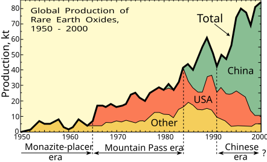

Geopolityka i koncentracja łańcucha dostaw
Najważniejsza dana: 13 marca 2012 (data wniosku o konsultacje) - właśnie 13 marca 2012 r. Stany Zjednoczone wystąpiły do Chin o konsultacje w sprawie ograniczeń eksportu różnych form pierwiastków ziem rzadkich, wolframu i molibdenu. Dla inwestora był to wyraźny sygnał, że dostęp do surowców krytycznych stał się przedmiotem sporu handlowego między państwami. 2
W skrócie
Łańcuch dostaw REE, czyli pierwiastków ziem rzadkich, jest najbardziej skoncentrowany nie w kopalniach, lecz na dalszych etapach przetwarzania. W 2024 r. Chiny odpowiadały za 60% wydobycia surowców magnetycznych, 91% rafinacji i separacji, czyli oczyszczania i rozdzielania, oraz 94% produkcji magnesów spiekanych, czyli wytwarzanych z prasowanego proszku; procent oznacza część ze stu. Po kontrolach z kwietnia 2025 r. chiński eksport magnesów spadł o około 75%, a Ford zatrzymał fabrykę w Chicago na 1 tydzień, pokazując, jak szybko decyzja administracyjna może przełożyć się na produkcję przemysłową. Zmiana dostawcy pozostaje powolna, jej koszt jest NIE UJAWNIONY, a kwalifikacja nowego dostawcy, czyli techniczne dopuszczenie jego produktu, trwa 12-24 miesiące. Dla inwestora oznacza to premię dla firm kontrolujących separację, produkcję magnesów i licencje eksportowe oraz podwyższone ryzyko dla odbiorców bez zatwierdzonych zamienników, szerzej opisanych w Łańcuch magnesów trwałych NdFeB i SmCo. 3456

Rycina 21: Globalna produkcja tlenków ziem rzadkich w latach 1950-2000 pokazująca przesunięcie dominacji ze złóż placerowych i kopalni Mountain Pass (USA) na produkcję chińską.1
Droga Chin do dominacji
Symbolicznym początkiem chińskiej strategii pozostaje przypisywane Deng Xiaopingowi zdanie z 1992 r., że Bliski Wschód ma ropę, a Chiny ziemie rzadkie. Brak oficjalnego transkryptu osłabia jednak jego wartość dowodową. Znacznie lepiej udokumentowany jest fundament technologiczny zbudowany przez Xu Guangxiana, który w 1977 r. rozwijał kaskadową ekstrakcję, czyli wieloetapowe rozdzielanie podobnych pierwiastków, a w 2009 r. otrzymał najwyższą państwową nagrodę naukowo-techniczną za jej zastosowanie przemysłowe. Dla inwestora ważniejsza od politycznego hasła jest zatem trwała przewaga procesowa, której odtworzenie wymaga kompetencji i czasu. 78
Przewaga kosztowa Chin łączyła łagodniejsze regulacje pracy i środowiska z wpływem państwa na podatki eksportowe; różnica kosztu jest NIE UJAWNIONA. Taka presja cenowa, określana jako dumping kosztowy, oraz wymogi środowiskowe doprowadziły do zamknięcia amerykańskiej kopalni w 2002 r., gdy Chiny osiągnęły ponad 96% światowej podaży. Oznacza to, że zachodnie projekty mogą tracić konkurencyjność nawet przy atrakcyjnej geologii, jeśli nie uzyskają ochrony regulacyjnej lub przewagi technologicznej. 910
Pekin dopełnił przewagi rynkowej konsolidacją sektora z 6 grup w 2. Fuzja 3 państwowych firm w grudniu 2021 r. stworzyła producenta skupiającego 30% krajowej produkcji metali REE i 60-70% ciężkich REE. W praktyce centralizacja zwiększa zdolność państwa do koordynowania podaży i cen, a inwestor powinien oceniać konkurencję przez pryzmat całych grup kapitałowych opisanych w Mapa kluczowych graczy w łańcuchu, a nie pojedynczych zakładów. 1112
Kryzys 2010-2014
Po kolizji przy spornych wyspach Senkaku w 2010 r. zatrzymano chińskiego kapitana. Następujące embargo na Japonię wstrzymało dostawy na około 2 miesiące, gdy Chiny kontrolowały około 90% podaży światowej, a zależność Japonii od nich sięgała niemal 90%. Epizod pokazał, że silna pozycja w łańcuchu dostaw może szybko stać się narzędziem nacisku, co zwiększa wartość zapasów i alternatywnych źródeł. 1314
USA wszczęły 13 marca 2012 r. postępowanie WTO, czyli Światowej Organizacji Handlu, w sprawach DS431, DS432 i DS433 dotyczących REE, wolframu i molibdenu. Organ Apelacyjny 7 sierpnia 2014 r. uznał ograniczenia za sprzeczne z zobowiązaniami Chin, raport przyjęto 29 sierpnia 2014 r., a 20 maja 2015 r. Chiny usunęły cła, kwoty, czyli limity ilościowe, i ograniczenia handlowe. Dla inwestora wniosek jest niejednoznaczny: reguły handlowe potrafią ograniczyć formalne bariery, ale nie usuwają strukturalnej przewagi dostawcy. 2152
Nowa era kontroli eksportu
MOFCOM, czyli chińskie Ministerstwo Handlu, ogłosiło 3 lipca 2023 r. kontrolę Ga i Ge, czyli galu i germanu. Eksport germanu spadł z 7965 kg w lipcu do 590 kg w październiku, gdzie kg oznacza kilogram. Kontrola grafitu weszła w życie 1 grudnia 2023 r., a 21 grudnia zakazano eksportu technologii ekstrakcji i separacji REE. Sekwencja tych działań wskazuje, że ryzyko regulacyjne obejmuje zarówno sam materiał, jak i wiedzę potrzebną do budowy konkurencyjnego przetwórstwa. 16171819
Kontrole antymonu ogłoszone 15 sierpnia 2024 r. objęły 17 kodów HS, czyli pozycji celnych, przy 48% udziale Chin w światowym wydobyciu. Od 4 kwietnia 2025 r. licencjami objęto 7 HREE, czyli ciężkich pierwiastków ziem rzadkich: Sm - samar, Gd - gadolin, Tb - terb, Dy - dysproz, Lu - lutet, Sc - skand i Y - itr, a także materiały magnetyczne. Rozszerzanie listy kontrolnej zwiększa ryzyko dla odbiorców zależnych od konkretnych pierwiastków i wzmacnia znaczenie kompetencji w separacji opisanych w Separacja, rafinacja i metalurgia. 2021422
Ogłoszenie z 9 października 2025 r. objęło produkty zagraniczne zawierające co najmniej 0.1% chińskich REE lub wytworzone wskazaną chińską technologią. Mechanizm de minimis, czyli minimalnego progu zawartości, oraz FDP, czyli reguła produktu zagranicznego, miały działać od 1 grudnia 2025 r., lecz zostały zawieszone do 10 listopada 2026 r. Eksterytorialny zakres regulacji oznacza, że ryzyko licencyjne może podążać za materiałem poza granice Chin, a zawieszenie nie usuwa tej niepewności. 2324
Magnesy, przestoje i rozejmy
Po kwietniu 2025 r. eksport magnesów spadł o około 75%, a producenci aut w USA, Europie i Japonii zgłaszali zakłócenia w ciągu tygodni. Ford zatrzymał Chicago na 1 tydzień, a inne zakłady na 3 tygodnie z braku magnesów do silników siedzeń, wycieraczek i drzwi. Dla inwestora jest to dowód, że niewielki komponent może zatrzymać aktywa o znacznie większej wartości i uderzyć w marże producentów końcowych. 4525
Wśród setek wniosków europejskich OEM, czyli producentów gotowych pojazdów, początkowo zatwierdzono 25%, a do początku lipca około 60%. Europejscy Tier-1, czyli bezpośredni dostawcy OEM, sygnalizowali przerwy, lecz ich straty są NIE UJAWNIONE. Rosnący odsetek zgód łagodzi presję operacyjną, ale uzależnia ciągłość produkcji od sprawności i uznaniowości procesu administracyjnego. 2627
Rozejm genewski z 11 maja 2025 r. obowiązywał 90 dni, część środków zawieszono od 14 maja, a framework, czyli ramy porozumienia, uzgodniono w Londynie 11 czerwca. Donald Trump i Xi Jinping spotkali się w Pusan 30 października. Licencje racjonują wolumen i pozwalają śledzić odbiorcę oraz zastosowanie; jest to wniosek analityczny z kontroli produktów zagranicznych, a nie ujawniona miara nadzoru. Inwestor powinien więc traktować polityczne rozejmy jako czasowe obniżenie ryzyka, nie jako trwałe usunięcie zależności. 28293022
Shenghe Resources jako chiński wektor
W MP Materials udział Shenghe spadł z 7.7% w latach 2021-2022 do około 3.1% we wrześniu 2025 r. Nawet mniejszościowy udział może jednak zapewniać wgląd i wpływ w strategicznym aktywie, dlatego inwestor powinien analizować nie tylko strukturę własności, lecz także relacje handlowe. 3132
W grenlandzkim Kvanefjeld Shenghe kupiło 12.51% i opcję dojścia do 60%, choć Grenlandia odrzuciła dalszą licencję 26 czerwca 2026 r. Przykład pokazuje, że dostęp do złoża zależy nie tylko od kapitału i geologii, lecz również od decyzji politycznych oraz społecznej akceptacji projektu. 333435
W Peak Rare Earths udział Shenghe wynosił 19.9%, po czym w maju 2025 r. firma zawarła przejęcie za 158 mln AUD, czyli milionów dolarów australijskich. Zachowała także offtake, czyli prawo odbioru, na 100% koncentratu Ngualla przez 7 lat. Taka konstrukcja łączy kontrolę kapitałową z kontrolą przepływu surowca, ograniczając dostępność wsadu dla konkurencyjnych łańcuchów poza Chinami. 363738
Koncentracja i odporność
Pojęcie single point of failure oznacza pojedynczy punkt zdolny zatrzymać system, a jego najważniejszymi przykładami są chińska separacja z udziałem 91% i produkcja magnesów z 94%. USA były w 2025 r. zależne od importu netto większości REE w 67%, a dla skandu i itru w 100%; import netto to import pomniejszony o eksport. NdPr, czyli neodym i prazeodym używane do magnesów, oraz Dy i Tb są szczególnie podatne, ponieważ amerykański Departament Energii zaliczył Nd, Dy i Tb do 7 materiałów krytycznych krótkoterminowo. Nawet gotowy zamiennik wymaga 12-24 miesięcy kwalifikacji, więc odporność rośnie wolniej niż napięcie polityczne. Premię mogą zyskać firmy realnie skracające tę ścieżkę i budujące łańcuch opisany w Dywersyfikacja i budowa łańcucha poza Chinami, natomiast projekty bez odbiorców i certyfikacji pozostają obciążone ryzykiem wykonawczym. 339406
Scenariusze zakłóceń
Przerwanie eksportu z Chin uderza najpierw w magnesy, bo kraj wytwarza 94% podaży, a zmiana dostawcy trwa 12-24 miesiące. Najbardziej narażeni są odbiorcy pracujący bez buforów magazynowych i bez wcześniej zatwierdzonej alternatywy. 36
Zakłócenie HREE z Mjanmy odcina chińskie rafinerie od wsadu, czyli materiału do przetworzenia: w 2023 r. kraj dostarczył 41700 ton, czyli jednostek masy, tlenków ciężkich REE, około 98% ich importu, przy wartości 1.4 mld USD, czyli miliarda dolarów amerykańskich. Zamknięcie rafinerii lub portu przenosi problem z geologii na logistykę i separację skupioną w Chinach w 91%. Oznacza to, że nawet dominujący przetwórca pozostaje podatny na przerwanie dopływu surowca oraz infrastruktury transportowej. 413
Sankcje mogą natomiast odciąć popyt obronny: od 1 stycznia 2027 r. DoD, czyli Departament Obrony USA, nie może kupować systemów z magnesami lub REE z zabronionych źródeł, w tym Chin. Regulacja tworzy szansę dla kwalifikowanych dostawców spoza Chin, ale zarazem ryzyko niedoboru dla wykonawców, którzy nie zdążą przebudować łańcucha. 42
xychart-beta title "Udział Chin w łańcuchu REE 2024 (proc.)" x-axis ["Wydobycie", "Rafinacja", "Magnesy"] y-axis "Procent" bar [60, 91, 94]
Rycina 6: Udział Chin w wydobyciu, rafinacji i magnesach REE, 2024.
Kontrowersje
Spór dotyczy tego, czy kontrole są bronią, czy legalnym nadzorem nad dual-use, czyli dobrami cywilnymi o możliwym zastosowaniu wojskowym. Zachód mówi o broni geoekonomicznej, czyli użyciu handlu do nacisku politycznego: Trump oskarżył Chiny o wykorzystywanie łańcuchów dostaw jako broni, a odpowiedź USA miała sięgać dodatkowej taryfy 100% ponad istniejące 30%, łącznie około 130%. MOFCOM twierdzi natomiast, że jest to legalne licencjonowanie dual-use, a nie zakaz, przy progu kontroli wynoszącym 0.1%. Dla inwestora spór o intencje jest mniej istotny niż skutek: przepływ materiałów może zależeć od bieżących relacji politycznych i decyzji licencyjnych. 43444522
Skuteczność kontroli pozostaje sporna. Za ich skutecznością przemawia spadek eksportu w maju 2025 r. o 74.3% rok do roku. Przeciw szczelności systemu przemawiają przemyt oraz reeksport, czyli ponowny wywóz przez kraje pośrednie, Tajlandię i Meksyk; wolumen w tonach i wartość w USD są NIE UJAWNIONE. Oficjalny eksport w pierwszej połowie 2026 r. wyniósł 30482.8 ton i spadł o 6.4%, co potwierdza przepływ mimo kontroli, ale nie dowodzi skali ich obchodzenia. Dla inwestora oznacza to jednoczesne ryzyko gwałtownych niedoborów i trudność w ocenie faktycznej podaży. 464748
Trwałość zawieszeń również nie jest przesądzona. Za stabilizacją przemawia wzrost zatwierdzonych licencji z około 25% do około 60% między początkiem czerwca i lipca 2025 r. Za kruchością przemawia to, że Genewa dała 90 dni, porozumienie Trump-Xi opisano jako 1-roczne, a październikowe kontrole zawieszono tylko do 10 listopada 2026 r. W rezultacie inwestor nie powinien utożsamiać poprawy bieżącej dostępności z trwałą normalizacją warunków handlu. 27284924
Źródłem chińskiej przewagi są zarówno strategia państwa, jak i koszty ponoszone przez Zachód. Za świadomą strategią przemawiają słowa Denga z 1992 r., konsolidacja z 6 grup do 2 i fuzja z 2021 r., która skupiła 30% krajowej produkcji oraz 60-70% ciężkich REE. Za wyjaśnieniem kosztowym przemawia zamknięcie amerykańskiej kopalni w 2002 r. przez ceny i wymogi środowiskowe oraz chińska przewaga regulacyjna. Dane wspierają oba mechanizmy: niskie koszty umożliwiły koncentrację, a państwo ją sformalizowało. Dla inwestora oznacza to, że sama poprawa ekonomiki zachodnich projektów może nie wystarczyć bez spójnej polityki przemysłowej i długoterminowego kapitału. 71112109
Luki do dalszego pogłębienia
- Chiny od srodka: krajowa rama prawna zarzadzania REE (rozporzadzenie z pazdziernika 2024, wlasnosc panstwowa, traceability MIIT), popyt wewnetrzny (EV/robotyka/wiatr), mechanizm zakupow rezerw panstwowych (SRB) i scenariusz Chin jako importera netto NdPr/HREE.
Spółki powiązane
- Shenghe Resources (600392, SSE) - profil deep
Źródła
- ilustracja - https://commons.wikimedia.org/wiki/File:Rareearth_production.svg
- Światowa Organizacja Handlu - https://www.wto.org/english/tratop_e/dispu_e/cases_e/ds431_e.htm
- IEA - https://www.iea.org/reports/rare-earth-elements/executive-summary
- Holland & Knight - https://www.chinastrategy.org/2025/06/20/chinas-magnet-exports-to-us-slammed-in-may-as-rare-earth-curbs-hit-data/
- Business Standard - https://www.business-standard.com/world-news/ford-forced-to-idle-multiple-us-plants-on-china-rare-earth-magnet-shortage-125062800136_1.html
- InvestorNews - https://investornews.com/critical-minerals-rare-earths/sourcing-rare-earth-permanent-magnet-motors-for-the-american-automotive-industry-market-status-structural-drivers-and-the-path-forward/
- The Federal - https://thefederal.com/category/opinion/china-rare-earth-controls-us-india-face-supply-challenge-213026
- Chemistry World - https://www.chemistryworld.com/news/xu-guangxian-a-chemical-life/3004349.article
- Oxford Institute for Energy Studies - https://www.oxfordenergy.org/wpcms/wp-content/uploads/2023/06/CE7-Chinas-rare-earths-dominance-and-policy-responses.pdf
- Defense News - https://www.defensenews.com/opinion/commentary/2019/11/12/the-collapse-of-american-rare-earth-mining-and-lessons-learned/
- Raw Materials - https://rawmaterials.net/2-giants-20-years-the-consolidation-of-chinas-rare-earth-industry/
- Baker Institute - https://www.bakerinstitute.org/research/chinese-behemoths-what-chinas-rare-earths-dominance-means-us
- Wikipedia - https://en.wikipedia.org/wiki/2010_Senkaku_boat_collision_incident
- NATO StratCom COE - https://stratcomcoe.org/cuploads/pfiles/senkaku_crisis.pdf
- WTO - orzeczenie - https://www.wto.org/english/news_e/news14_e/dsb_29aug14_e.htm
- Mayer Brown - https://www.mayerbrown.com/en/insights/publications/2023/07/china-imposes-new-export-controls-on-two-minerals-critical-to-the-manufacture-of-semiconductors
- Stimson Center - https://www.stimson.org/2025/chinas-germanium-and-gallium-export-restrictions-consequences-for-the-united-states/
- Lexology - https://www.lexology.com/library/detail.aspx?g=540315b2-4429-4f7e-9f74-5d9f397160d4
- CSIS - https://www.csis.org/analysis/what-chinas-ban-rare-earths-processing-technology-exports-means
- Global Trade Alert - https://globaltradealert.org/state-act/88204-china-government-announces-export-control-measures-for-antimony-and-related-items
- USGS - https://pubs.usgs.gov/periodicals/mcs2025/mcs2025-antimony.pdf
- CSET - https://cset.georgetown.edu/publication/mofcom-notice-2025-61/
- Jones Day - https://www.jonesday.com/en/insights/2025/10/china-imposes-extraterritorial-export-control-measures-over-rare-earth-items
- Pillsbury - https://www.pillsburylaw.com/en/news-and-insights/china-suspends-export-controls-certain-critical-minerals-related-items.html
- Ford Authority - https://fordauthority.com/2025/07/ford-plants-shut-down-for-weeks-over-rare-earth-magnet-shortage/
- CLEPA - https://www.clepa.eu/insights-updates/press-releases/urgent-action-needed-as-chinas-export-restrictions-on-rare-earths-disrupt-european-automotive-supply-chains/
- Herbert Smith Freehills Kramer - https://www.hsfkramer.com/notes/sanctions/2025-posts/us-and-china-agree-to-framework-addressing-export-control-issues
- CSIS - https://www.ecns.cn/m/business/2025-05-15/detail-ihernfey9437372.shtml
- Fortune - https://fortune.com/2025/06/11/us-china-agree-framework-resolve-trade-dispute-london-rare-earth-metals
- CNBC - https://www.cnbc.com/2025/10/30/trump-xi-south-korea-rare-earth-tariff-trade-war-nvidia.html
- MarketScreener - https://www.marketscreener.com/quote/stock/SHENGHE-RESOURCES-HOLDING-9949770/news/U-S-senator-worried-about-Chinese-stake-in-MP-Materials-39928541/
- Stock Titan - https://www.stocktitan.net/sec-filings/MP/schedule-13g-a-mp-materials-corp-de-sec-filing-bfa2c25dbe9b.html
- Jichang Lulu - https://jichanglulu.wordpress.com/2016/09/23/new-chinese-investor-in-greenland-uraniumrare-earth-project/
- Mining Technology - https://mine.nridigital.com/mine_aug21/greenland_minerals_kvanefjeld
- World at Large - https://www.worldatlarge.news/2026/07/03/greenland-rejects-china-backed-australian-firms-application-to-mine-kvanefjeld-rare-earths-project/
- Appian Capital Advisory - https://appiancapitaladvisory.com/exit-appian-successfully-sells-its-19-9-shareholding-in-peak-rare-earths-generating-strong-investor-returns/
- Mining Weekly - https://www.miningweekly.com/article/shenghe-moves-to-acquire-peak-rare-earths-in-a158m-deal-2025-05-15
- Project Blue - https://projectblue.com/blue/news-analysis/1209/shenghe-tops-up-stake-to-acquire-peak-rare-earths-and-secure-more-ex-china-feedstock-
- CRS - https://www.congress.gov/crs_external_products/IF/PDF/IF13171/IF13171.1.pdf
- Departament Energii USA - https://www.osti.gov/biblio/1998242
- CNBC - https://www.cnbc.com/2025/06/24/chinas-rare-earth-dominance-myanmar-plays-a-critical-role-.html
- GlobeNewswire - https://www.globenewswire.com/news-release/2026/06/10/3309583/0/en/REalloys-Initiates-Qualification-Effort-for-Defense-Grade-Heavy-Rare-Earth-Materials-to-Meet-DFARS-252-225-7052-January-1-2027-Deadline.html
- Atlas Institute - https://atlasinstitute.org/rare-earths-intelligence-and-national-security-how-chinas-restrictions-threaten-u-s-defense-resilience-and-risk-a-new-trade-war/
- Forbes - https://www.forbes.com/sites/earlcarr/2025/10/17/chinas-new-export-controls-critical-implications-for-us-businesses/
- Rząd Chin - https://english.www.gov.cn/news/202510/13/content_WS68ecc859c6d00ca5f9a06bc8.html
- S&P Global - https://www.spglobal.com/energy/en/news-research/latest-news/metals/012726-rare-earth-supply-bottlenecks-set-to-persist-in-2026
- Reuters przez Yahoo Finance - https://finance.yahoo.com/news/exclusive-us-buyers-critical-minerals-020437969.html
- Global Times - https://www.globaltimes.cn/page/202607/1365894.shtml
- CBS News - https://www.cbsnews.com/news/heres-what-trump-says-he-and-xi-agreed-to-in-their-meeting/
- 4 kwietnia 2025 (ogłoszenie MOFCOM nr 18) - https://www.hklaw.com/en/insights/publications/2025/04/china-imposes-export-controls-on-medium-and-heavy-rare-earth-materials
- 11 maja 2025 (rozejm genewski) - https://www.csis.org/analysis/trump-strikes-deal-restore-rare-earths-access